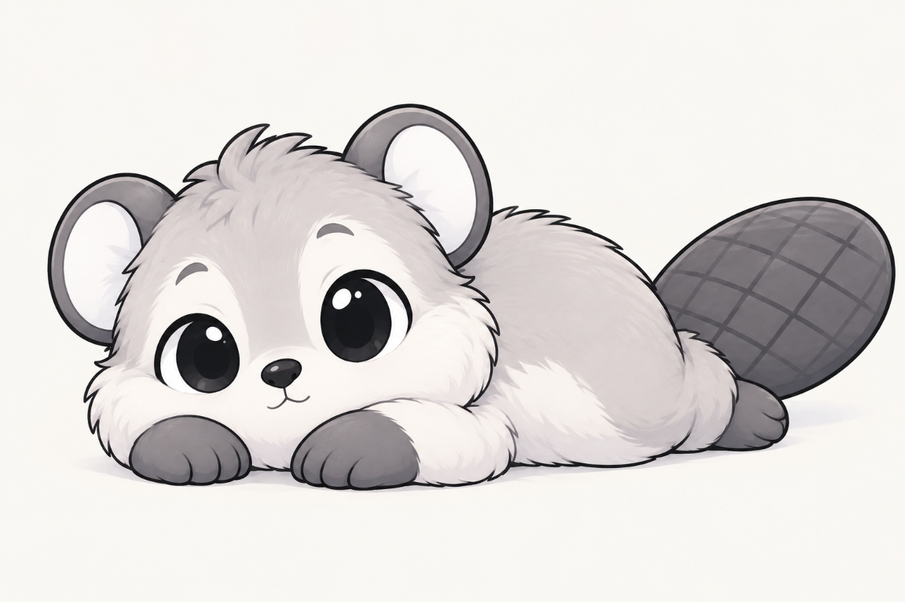

Dans notre communauté de soixante castors, nous sommes cinq frères : Yaki, Yuki, Toutou Yaki, Tristan Yaki et moi, Mini Castor. Notre père Speed est aussi le beau-père de Yaki et Yuki, et il nous considère tous comme ses enfants. Neko, un homme humain qui vit avec Speed, est notre mère de famille ; nous, les castors, l’appelons ainsi tout naturellement. Yaki est énergique et inventif, Yuki observe les idées douteuses avec son fameux « Nul. », et moi, j’essaie parfois de trouver comment les rentabiliser. Toutou Yaki préfère les coussins moelleux, les endroits chauds et les journées tranquilles. Tristan lui ressemble beaucoup, mais reste toujours assis ; lui aussi a ses habitudes bien à lui. Toutou Yaki est sage, patient et affectueux ; sa philosophie tient en peu de mots : « La vie est courte. Les siestes devraient être longues. »
Son pelage blanc et gris très clair est si doux qu’on comprend pourquoi il aime le confort. Il a de grands yeux ronds tout noirs, un petit nez noir, un visage et un ventre blancs, des pattes grises et une large queue plate de castor marquée de losanges. Pas de dents qui dépassent, pas de grand numéro : juste un castor moelleux, tranquille, presque toujours allongé sur le ventre, les pattes devant lui et la tête posée dessus. Il comprend pourtant très bien ce qui se passe autour de lui ; il préfère seulement réfléchir avant de bouger, et parfois laisser ses frères apprendre de leurs propres idées.
Une catastrophe évitée sans se lever
Un après-midi, Yaki a voulu tester une rampe pour faire rouler ses hochets jusqu’à l’autre bout du terrier. Yuki a jeté un regard à l’installation et a dit : « Nul. » Toutou Yaki n’a pas pris la remarque personnellement. Il a observé la rampe depuis son coussin et a doucement signalé qu’elle pointait droit vers l’étagère des pots de compote. Puis il a ajouté : « J’avais un mauvais pressentiment. Mais je n’avais pas envie de me lever pour le dire. »
Yuki a haussé les épaules : « C’est une remarque intéressante. Elle rendrait mieux avec un sourire. » Toutou Yaki lui a répondu, sans se vexer : « Tu as peut-être raison. Mais tu pourrais le dire plus doucement. » Nous avons suivi son conseil et déplacé la rampe avant le départ. Les hochets ont roulé dans un panier, aucun pot n’a bougé et Yaki a aussitôt proposé une deuxième manche. Toutou Yaki avait déjà reposé la tête sur ses pattes. Il nous a laissés profiter de notre succès modeste sans réclamer la moindre médaille.
Le repos n’est pas à vendre
Toutou Yaki aime ses frères et reste volontiers près de nous, tant que le bruit ne dure pas trop longtemps. Il ne cherche ni le chaos ni les disputes : il remarque le détail oublié, donne un conseil simple et bienveillant, puis reprend sa position favorite. Quand j’ai voulu lui proposer un coussin « premium » avec sieste sous abonnement, il a fermé lentement les yeux et répondu : « Tout ne se vend pas, Mini Castor. Par exemple, ma tranquillité. » J’ai rangé mon contrat. On peut être un entrepreneur sérieux et reconnaître qu’un client vient de refuser une offre.
Dans une fratrie de quatre, son calme est précieux. Yaki apporte l’énergie, Yuki le commentaire sec, moi les calculs parfois douteux, et Toutou Yaki nous rappelle qu’on peut réfléchir avant d’agir. Il ne se lève presque jamais sans bonne raison, mais quand l’un de nous a vraiment besoin de lui, il sait être là. Le reste du temps, il garde sa place au chaud et nous laisse découvrir par nous-mêmes les conséquences de nos plans. C’est une méthode reposante, et jusqu’ici, elle nous a évité plusieurs catastrophes ainsi qu’un nettoyage de compote.